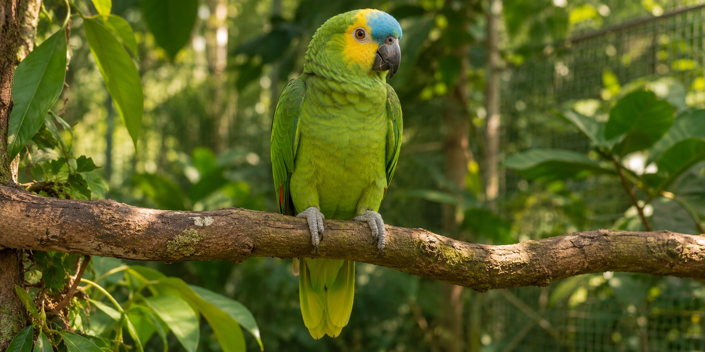

Registro 014: papagaio-verdadeiro

Amazona aestiva — ave silvestre nativa.
Animal apreendido em cativeiro irregular, em avaliação para encaminhamento a instituição autorizada. A soltura imediata depende de avaliação do comportamento e da capacidade de sobrevivência na natureza.
Recebimento condicionado à análise documental, ao responsável técnico e à existência de recinto adequado. Sem lance ou arremate.
Consultar requisitos para receber o papagaio-verdadeiro